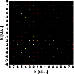
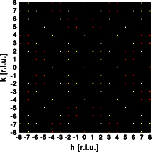

Structure solving: Part I

Structure solution
Tasks part 1
Answers part 1
Tasks part 2
Answers part 2
Tasks part 3
Answers part 3
Goto
Contents
The first part will guide you through a simple structure determination, including some 'homework'. We will start, as in real life, with the diffraction pattern of the substance. The two patterns reproduced are from the identical crystal and were taken in the identical orientation. The origin of reciprocal space is at the center of each diffraction pattern. Reciprocal space is shown without distortions. To get a full screen version, click on the corresponding image.
 

Now, as promised some homework which should be done before proceeding to the next section containing the answers.
Do not go any further before you have answered the questions above ....